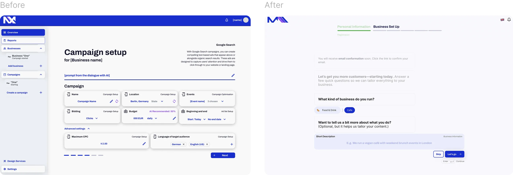
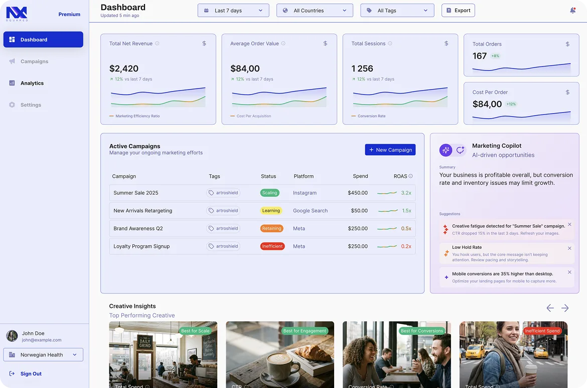
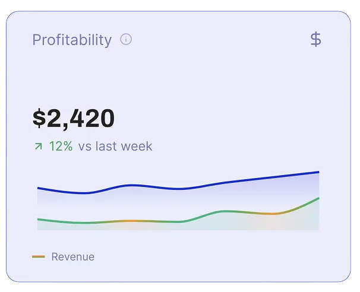
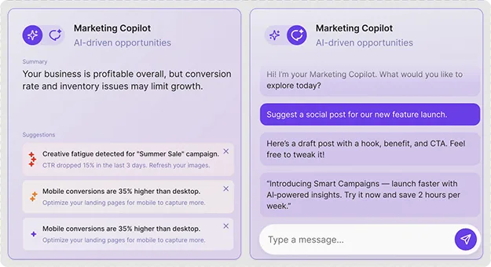

Case study — 01
Why 25 analytics dashboards are useless without guided decisions.
Internal users spent 30 minutes struggling to launch a single campaign. We replaced manual form-filling with automated data review, cutting onboarding by 25 minutes.
The client
An internal agency venture productized to give SMBs automated marketing.
Originally kicked off by the CEO as an internal tool, the product showed enough traction to be spun out as MX2 under the agency's main brand. It serves small business owners who know their customers and margins inside out, but can't justify the cost or overhead of hiring an agency.
The problem
“Build an AI tool so clients can spin up their own marketing campaigns.”
The initial brief assumed owners just needed an AI generator. But marketing isn't just copywriting—it's attribution, budget pacing, and media planning. Handing non-marketers empty fields and complex charts paralyzed them. We didn't need to add features; we had to bake the domain expertise directly into the UI.
- Signal Internal testers spent 30 minutes struggling to launch a first campaign.
- Constraint Integrating live multi-source marketing APIs without crushing engineering.
- Unknown How deep non-marketers actually want to dig into their data without getting lost.
How it got solved
Hover a step
-
01
Mapped marketing's hidden complexity
Ran workshops with senior media planners to unpack campaign logic. Realized the UI needed to do the heavy lifting, not the user.
THE FOUR DEPENDENCIES THE WORKSHOPS UNCOVERED -
02
Replaced blank inputs with guided review
Scraped website copy to prefill business details and suggest starter budgets. Users just corrected and confirmed.

ONBOARDING BEFORE AND AFTER: BLANK FIELDS TO GUIDED REVIEW -
03
Structured 25 dashboards across 5 tiers
Organized data from high-level health down to individual ad creative. Casual users stay top-level; fixers dive deep.

TOP TIER OF FIVE: HEALTH METRICS, CAMPAIGN TABLE, CREATIVE ROW -
04
Prototyped live widgets to unblock dev
Engineering pushed back on multi-API widgets. Built a working prototype with Claude Code to prove feasibility.

WORKING WIDGET: ONE FIGURE, ITS CHANGE, AND ITS SERIES -
05
Added AI guidance and scaled the system
Paired contextual widgets with AI recommendations and built a 40-component design system that onboarded a second designer fast.

AI COMPANION IN BOTH MODES: STANDING SUGGESTIONS AND CHAT
The impact
Cut first-time campaign launch time by 83% while scaling to 25 core dashboards.
- −25m
- Time to first campaign
- 25
- Dashboards delivered
- 40+
- Reusable components
Prototyping complex widgets unblocked development and proved feasibility on day one. By baking marketing expertise directly into the UI rather than asking users for it, we turned a 30-minute chore into a 5-minute review.